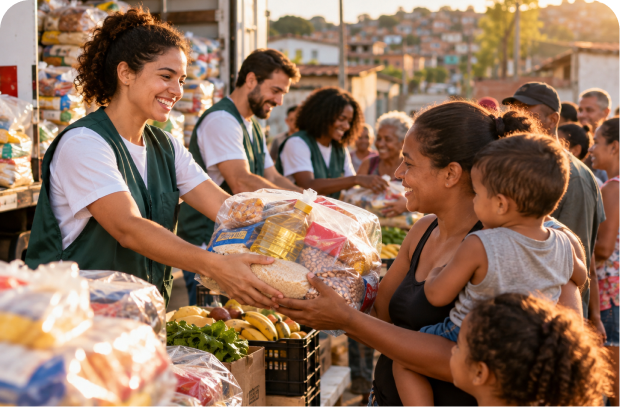
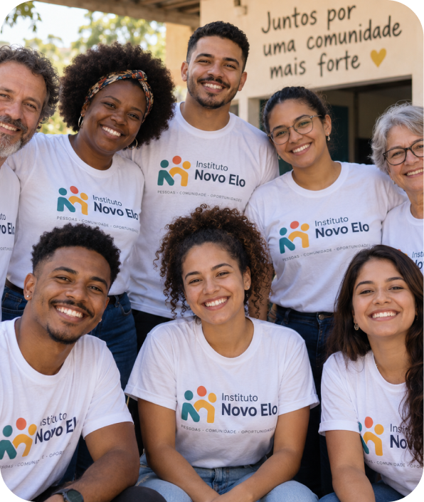
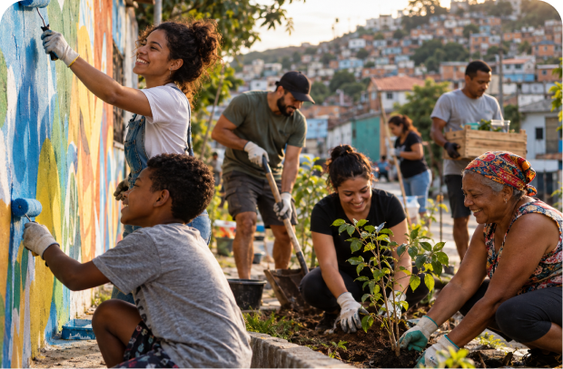

Alimentação para Todos
Arrecadação e distribuição de alimentos para famílias em situação de vulnerabilidade.
Conhecer o projetoO Instituto Novo Elo conecta pessoas, recursos e iniciativas para apoiar comunidades e criar novas oportunidades.
Conheça os nossos projetosQuem somos?
O Instituto Novo Elo é uma organização sem fins lucrativos criada para apoiar pessoas e comunidades por meio de iniciativas sociais. Acreditamos que pequenas ações, quando realizadas em conjunto, podem gerar grandes mudanças.

Nossos projetos
Atuamos em diferentes frentes para contribuir com comunidades e famílias que precisam de apoio.

Arrecadação e distribuição de alimentos para famílias em situação de vulnerabilidade.
Conhecer o projetoApoio educacional e distribuição de materiais escolares para crianças e adolescentes.
Conhecer o projeto
Atividades e ações sociais voltadas ao desenvolvimento e fortalecimento das comunidades.
Conhecer o projetoFaça parte das nossas ações e ajude a construir novas oportunidades.
Quero ser um voluntário